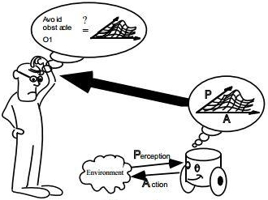
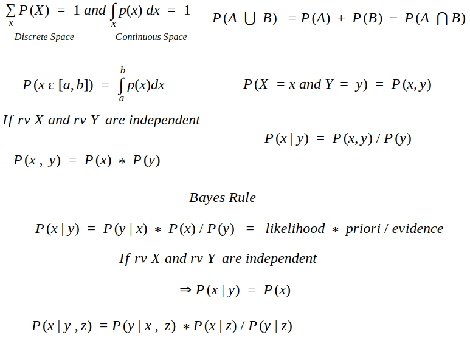
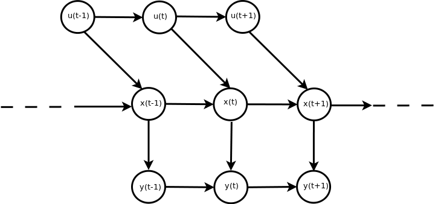
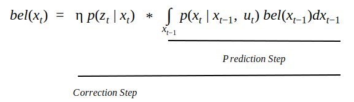

The domain of robotics has exploded over the past couple of decades. Robots have evolved from being manipulators employed in manufacturing factories to personal robots, humanoids, mobile robots, robot vacuum cleaners and a lot more.
With all different kinds of robots coming up, considerable stochasticity is introduced due to the sensors for perception, model and measurement inaccuracies and computational uncertainties. Sensors are generally noisy and known to be performing reliably only within a certain expected accuracy. The physical robot models, size measurements, actuator configuration and manufacturing also carry certain imperfections.
There are several probabilisitic techniques employed to represent and model these inaccuracies in order to ensure that the final state estimations are closest to ideal. While probabilistic methods try to enhance the accuracy, the stochastic nature of the system with approximations and inaccurate assumptions still deters usage of the technique for critical applications that need to be ideally deterministic in behavior.

Introduction
Probabilistic techiques are largely deployed in robotics for two tasks to tackle uncertainties in state estimation and action ultilization. While state estimation incurs inaccuracies due to noisy sensors, robot action has uncertain behavior due to imperfect physical model and operational environment inflicted errors( like wheel slippage) thereby necissating the mathematical representation of these tentative uncertaintiies and their inclusion in the system model.
While these uncertainties can be modeled numerically, state estimation repeatedly uses this model along with the incoming sensor measurements to derive the final probability density for the state at the each consecutive timestamp, using several probabilisitic computations. Recursive Bayesian estimation, also called Bayes filter is this probabilisitic technique for sequential state estimation.
Techniques like the Kalman filters and its variants and the Particle filters are the front-runners of this domain. State estimation applications often also involve a priori multi-sensor data-fusion step which also uses these filtering techniques to provide the best perception results.
NOTE: Readers are expected to have basic knowledge about probability, conditional probability, probability distribution functions and their mathematical representations.

Bayesian Terminology and Concepts
Probabilistic theory can get confounding when dealing with several jargons. Moreover, the complete foundation of these probabilistic techniques is built upon just a few mathematical concepts and assumptions, discussed here.
For all discussions further; x = state, z = observation, u = action and X = a random variable
P( z | X = xi ) is causal (given that the state x is known, what could the observation z predict ) while P( X = xi | z ) is diagnostic (given that the observation z is known, what would the actual state x be).
Causal systems are easier to obtain because it represents the reliability of a sensor (that obtains the observation z) which can be obtained manually.
The Bayes rule gives us
P( X = xi | z ) = P( z | X = xi ) * P(X = xi) / P(z)
Normalization of the Bayes Filter gives
P( x | y ) = P( y | x ) * P( x ) / P( y ) = η P( y | x ) * P( x )
where η = P( y )-1 = 1 / ( Σ P( y | x) P( x ))
Markov assumption says current observation zt at timestamp t is independent of all prior observations z1:t-1 and all prior input signals u1:t, given the state xt is available.
Markov assumption also states that the current state xt at timestamp t is independent of all prior observations z1:t-1 given the state at the previous timestamp xt-1 and input signal at the current timestamp ut are available.

A sensor model is the mathematical representation of the belief in the accuracy of a sensor's estimate of the parameter. The actions model is the mathematical representation of the belief in the ability of the inputs given to the robot to actually drive the robot to the expected(mathematically derived) final configuration.
For instance, in a mobile robot; the range-measurement sensor model should state the probability with which the sensor measures the distance accurately and could be affected by noise and operational limitations of the sensor. For the action model, it would be the ability of the mobile robot to move the amount of distance that it is expected to, when fed with a particular velocity/acceleration/jerk.
Transition probability defines the likelihood of change from state xa to state xb.
Emission probability defines the likelihood of a sensor measurment of a state za accurately representing the actual state xa.
Transition Probability = p( xt | xt-1 )
Emission Probability = p( zt = xt | xt )
State Estimation
For a robot, its state could comprise of any number of parameters defining its configuration. It could be the position(x,y,z) and orientation(qw,qx,qy,qz) for the end-effector of a manipulator or the GPS coordinates of a drone or the joint angles of the legs of a biped robot.
For the sake of simplicity, this artcile refers to the pose of a mobile robot - position (x, y) and orientation (θ) of the heading as the state being determined. In mobile robotics terminology, this is localization - the process of determining the location of the robot in the world given the actions that it takes and the perception model derived observations.
Visual Representation of Robot Localization
For a mobile robot, it can be intuitively understood that the current best estimate of its pose will be dependent upon how well does the sensor model observe its pose and how well does the robot model implement the action on the robot.
Thus, the probabilistic representation of the robot's pose, i.e. the localization process should be dependent on the sensor model and the action model.
Sensor model = P(zt | xt )
Inference: sensor observation at timestampt t is only dependent upon the state at timestamp t
Action model = P(xt | ut, xt-1 )
Inference: State at timestamp t is dependent upon the action taken at timestamp t and state at timestamp (t-1)
The recursive Bayes estimation involves two major steps called the prediction step and the correction step. The prediction step involves estimating the next/current value of the state based on the previous state and accounting for the probability of transition from the previous state to the next state. The correction step involves using the sensor model probability of the current state to rectify the result obtained from the prediction step.
Mathematically, the final equation for state estimation is given by

As evident, the prediction step includes the action or motion model p(xt | ut, xt-1 ) of the system while the correction step uses the sensor model p(zt | xt ) and finally normalizes it with a factor η.
CONCLUSIONS FOR RECURSIVE BAYESIAN ESTIMATION
Bayes filters while computing the probabilities need to model the nature of inaccuracies and noise. Given the universal applicability, we could assume it to be a Gaussian model which, for noise in measurements would suggest that the error(essentially the probability of occurence) in measurement would be distributed around the actual value as a Gaussian centered around it.
Other distributions could be a uniform distribution or a special polynomial defined distribution.
While the underlying probabilistic concepts remain the same for all systems, the action/motion model and sensor/observation models of the system could be linear or non-linear. Kalman filter family has different variants supporting both.
The distribution may or may not have a parametric representation. Basically, the Gaussian distribution can be modeled and defined using the mean and the variance while a uniform distribution would have a value and the range of extent.
However, there could be arbitrary distributions not modeled by finite number of parameters and need multiple sampling instances to represent the distribution.
The different distribution mechanisms divide the broad category of filtering/recursive estimation techniques to Kalman and Particle Filters. While Kalman filters operate on parametric definitions, particle filters use sampled points/particles to model the distribution. These filters should be discussed individually in later posts.
IF YOU LIKED THE ARTICLE, DON'T FORGET TO LEAVE A REACTION OR A COMMENT!
Copyright @Akshay Kumar | Last Updated on 05/25/2019